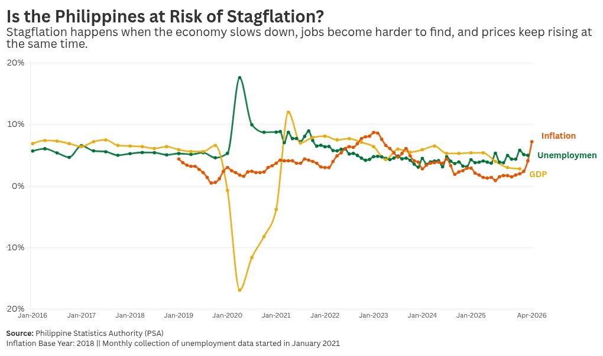
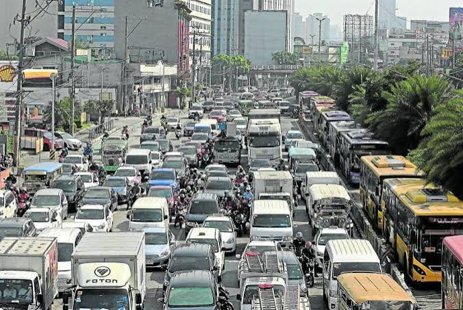
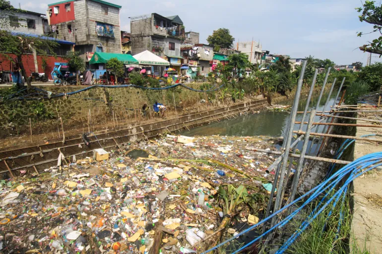
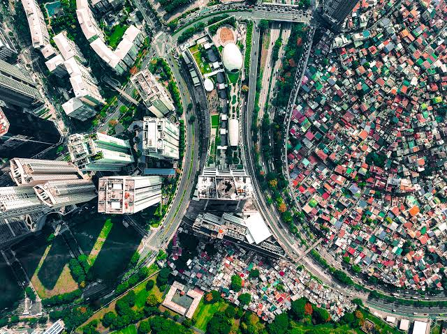

Stagnant Economy
As of today, the economy which was dubbed in the previous administration as the “Rising Tiger of Asia” has faced great decline over the next few years. With the current administration taking it deeper with constant economic debt. Conditions of living worsening as prices spike higher and higher.
Traffic Jams
Commuting has turned into an endurance sport. Hours lost on congested roads aren't just frustrating, they drain our productivity, mental health, and precious time with family.

Lack of Career Opportunities
Young professionals and seasoned workers alike are finding local job markets saturated yet lacking. True career opportunities with fair compensation are frustratingly hard to come by, pushing many to look overseas.
Underdeveloped Environmental Measures
While some urban centers see rapid, glittering changes, other regions are left behind due to uneven development. Meanwhile, our environmental safeguards remain critically underdeveloped, leaving communities vulnerable to ecological strain.


Uneven Development
Differences between economic status can be seen from high above the sky as areas are divided between sprawling metropolitan cities, and run-down homes that lack infrastructural integrity.